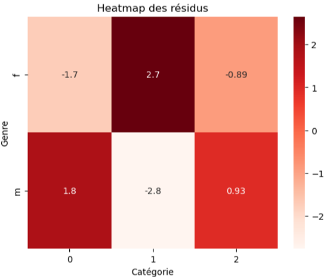

Analyse des ventes d’une librairie en ligne
python
Jupyter
Formation
Analyse des performances globales du site, des comportements clients, des produits stratégiques (top/flop) et propositions d’axes d’amélioration marketing.
Contexte
Ce projet a été réalisé dans le cadre de ma formation de Data Analyst chez OpenClassrooms.
Démarche
- Profil des clients
- Identification d’un groupe VIP
- Répartition par genre (52% femmes / 48% hommes)
- Répartition par âge (sur-représentation des 18 ans => âge mini d’inscription)
- Evolution dans le temps
- CA mensuel stable, sans saisonnalité marquée
- Nombre de transactions stabilisé
- Arrêt total de recrutement de nouveaux clients à partir de février 2022
- Produits
- 24 produits invendus => potentielle suppression
- Analyse par catégories (0 = entrée de gamme, 1 = milieu de gamme, 2 = premium)
- Comportement clients
- Genre - Catégorie : lien significatif (Chi-2)
- Age - Dépenses : corrélation faible (Spearman)
- Age - Fréquence d’achat : corrélation faible (Spearman)
- Age - Panier moyen : corrélation modérée (Spearman)
- Age - Catégorie : lien significatif (Kruskal-Wallis)
Résultats
L’analyse a permis de proposer les recommandations suivantes :
- Cibler les femmes de 35-55 ans avec les produits de catégorie 1
- Développer une offre pour les 20-30 ans avec les produits premium
- Revoir le cataglogue (produits invendus ou très peu vendus)
- Relancer acquisition client
Réalisations
Test du Chi-2 entre genre et catégories de produits
# Calculer le test du Chi-2
chi2_stat, p_value, dof, expected = chi2_contingency(contingency_table)
#Hypothèse H0 : les variables sont indépendantes
#Hypothèse H1 : Les variables sont dépendantes
#Seuil choisi
seuil = 0.05
print(f"Statistique Chi-2: {round(chi2_stat,2)}")
print(f"Valeur p: {p_value}")
if p_value < seuil :
print("La p-value est inférieure au seuil choisi, l'hypothèse H0 est rejetée et le lien entre genre et catégorie n'est probablement pas lié au hasard.")
else :
print("La p-value est supérieure au seuil choisi, l'hypothèse H0 n'est pas rejettée et le lien entre genre et catégorie pourrait être dû au hasard.")
TipSortie d’exécution
Statistique Chi-2: 22.67
Valeur p: 1.1955928116587024e-05
La p-value est inférieure au seuil choisi, l’hypothèse H0 est rejetée et le lien entre genre et catégorie n’est probablement pas lié au hasard.

Stack
python · Jupyter
Voir le projet complet sur GitHub →
Retour à la liste de projets →